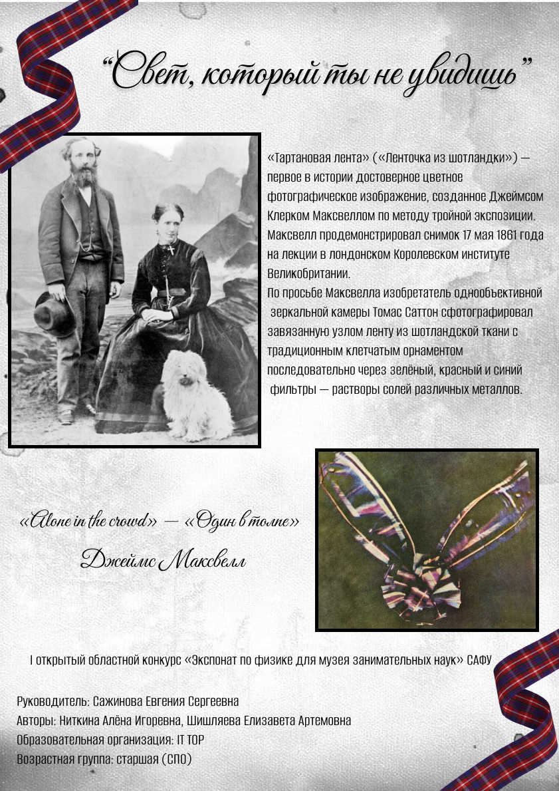

«Свет, который ты не увидишь»
📷 «Тартановая лента» — первое цветное фото в истории (1861) 🎞️ Джеймс Клерк Максвелл

🎞️ «Ленточка из шотландки» — метод тройной экспозиции, 17 мая 1861, Лондон
Джеймс Клерк Максвелл и изобретатель зеркальной камеры Томас Саттон создали первое достоверное цветное изображение. Ленту из шотландской ткани (тартан) сфотографировали последовательно через зелёный, красный и синий фильтры — растворы солей металлов. Проекция трёх снимков дала полный цвет.
Снимок продемонстрировали 17 мая 1861 года в лондонском Королевском институте Великобритании. Этот эксперимент заложил основу всей современной цветной фотографии.
✨ «Тартановая лента» — свет, который не умирает спустя полтора века.